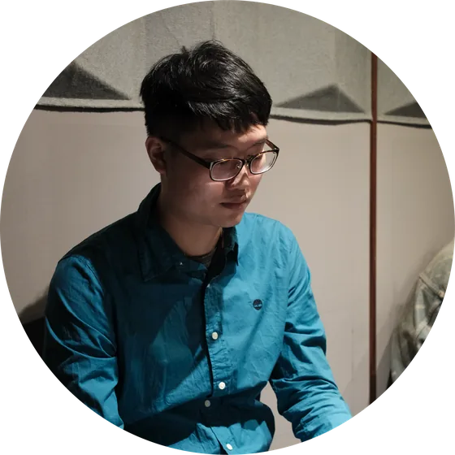
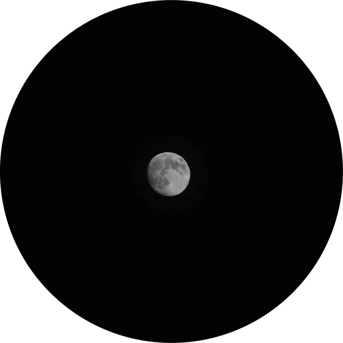
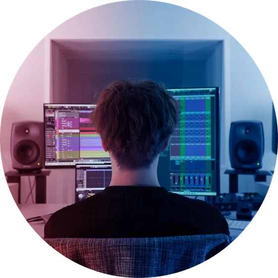
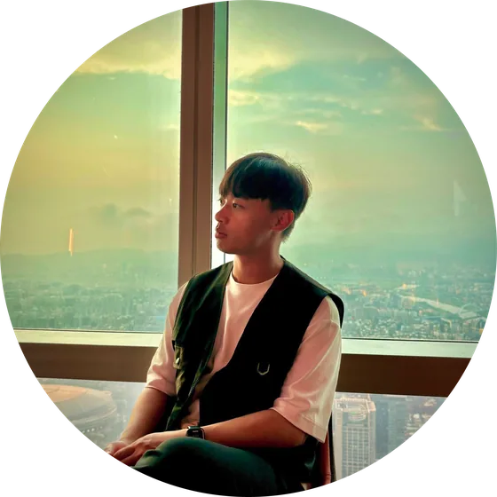

TURN SOUND 的使命
TURN SOUND 成立於2020年，我們致力於創新、卓越的音樂製作，為各類視覺產品提供專業諮詢、技術支援，從每一次交談中深入了解客戶真正的需求，並提供創新、有效的解決方案，利用音樂豐富用戶的產品體驗，創造令人難以忘懷的作品，達到一加一大於二的效果。
TURN SOUND 可以協助您可以找到最適合的製作方式與流程，為您編寫出獨一無二、客製化的音樂，同時為您打造專屬於您的音樂製作團隊。
TURN SOUND 的願景
我們的願景是成為音樂產業界首屈一指的人才橋樑，不僅投入於人才媒合與培育，確保接案者擁有優質的團隊合作經驗，更追求推動業內的良性循環。
我們相信，每一次的合作應是每一位音樂工作者的成長、交流、學習，除了專業技術精進，野讓業界和我們的合作夥伴都能共同前進，實現真正的雙贏。
創作團隊



